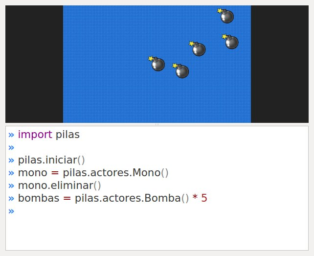
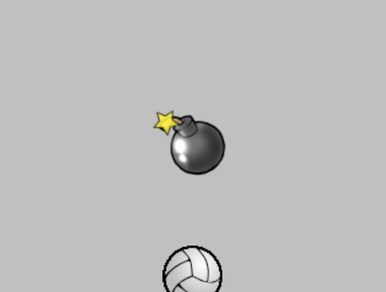

Grupos
Ahora que podemos manejar a los actores de manera individual. Vamos a ver cómo organizarlos en grupos.
Organizar a los actores en grupo es de utilidad, porque generalmente es una buena idea agrupar a los actores por características y tratarlos a todos por igual. Por ejemplo, en un juego de naves podríamos tener un grupo de naves, un grupo de estrellas y un grupo de disparos.
Creando grupos de actores
Para crear varios actores de una misma clase podríamos ejecutar algo como lo que sigue:
bombas = pilas.actores.Bomba() * 5
es decir, creamos un actor y luego lo multiplicamos para construir un grupo con muchos actores de la misma especie.
Al crear un grupo de esta forma, todos los actores se colocarán en posiciones aleatorias.
Esto es lo que veríamos en la ventana de pilas:

A partir de ahora, la referencia bombas nos servirá para
controlar a todas las bombas al mismo tiempo.
Esta referencia es parecida a una lista de python normal. Así que podríamos contar cuantas bombas hay en la escena, o recorrer el grupo haciendo algo:
>>> print "hay", len(bombas), "bombas"
hay 5 bombas
>>> for una_bomba in bombas:
... print una_bomba.x, una_bomba.y
Ahora bien, algo que hace un poquito diferente a los grupos de las listas de python, es que los grupos te permiten alterar a varios actores al mismo tiempo con mas facilidad.
Por ejemplo, imagina que quieres hacer que todas las bombas aparezcan en el centro de la ventana. Podrías hacer algo cómo esto:
bombas.x = 0
Y en la ventana obtendremos:

Incluso, les podríamos enseñar a las bombas a reaccionar como si fueran pelotas, es decir, que reboten e interactúen con la aceleración gravitatoria:
bombas.aprender(pilas.habilidades.RebotarComoPelota)
Ahora tendrás algo mucho mas interesante, un montón de actores rebotando entre sí:

Un consejo, la gravedad del escenario se puede modificar usando una sentencia como la que sigue:
pilas.fisica.gravedad_x = 200
pilas.fisica.gravedad_y = 0
En este caso gravedad_x con un valor de 200 va a empujar los objetos
hacia la derecha de la pantalla, mientras que los objetos en el eje vertical
van a flotar.
Intentá ver esto en funcionamiento, ¡es divertido!
Creando un grupo para distintos actores
Hay ocasiones, donde quieres tener un grupo desde cero e ir agregando actores en él.
Esto se puede hacer fácilmente, e incluso abre las puertas a que puedas mezclar actores de distintas especies.
Para crear un grupo vacío tienes que crear un objeto de la clase Grupo:
mi_grupo = pilas.grupo.Grupo()
y luego, para añadir actores al grupo puedes usar el
método append e indicar la referencia del actor
que quieres agregar:
bomba = pilas.actores.Bomba()
pelota = pilas.actores.Pelota()
mi_grupo.append(bomba)
mi_grupo.append(pelota)
mi_grupo.escala = [2]
